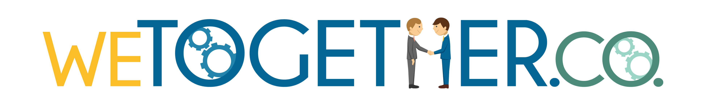

Hello World!
Rails Girls 宜蘭第一回！我們將舉辦2天的工作坊，讓女生們有機會藉由認識Ruby程式語言以及實際操作Rails的機會，預計招收30位學員，讓各位一窺程式設計的內容及實現自己的點子與理想。
女性學員報名即日起至2/20截止
概要由教練指導學員用Rails進行網站程式設計, 從原型的網站到佈署在簡易的雲端平台上
學員需要準備學員必需自備筆記型電腦, 作業系統不限(推薦MacOS或Linux/BSD平台)
| 14:00 - 17:00 |
環境安裝從零開始安裝Ruby以及Rails環境, 以及基本的命令列模式使用教學。 |
|---|
| 10:00 - 10:45 |
報到以及繼續安裝環境學員報到，接續前晚的課題，將基本 Ruby 及 Rails 環境架設完成，基礎命令行(Command line)輕鬆教學讓女孩們第一次架環境下 command 就上手！ |
|---|---|
| 10:45 - 11:00 |
Welcome介紹贊助商與協力夥伴們 |
| 11:00 - 12:00 |
WorkshopRuby 初探：早晨架設好的環境及相關小知識，開始基礎 Ruby 語法教學。 |
| 12:00 - 13:00 | 午餐時間 |
| 13:00 - 16:20 |
WorkshopLet's on Rails：學習了基本的 Ruby 語法，一起進入 Rails 的軌道上吧，帶領學員用最輕鬆愉快的方式實做網站中的 CRUD (新增、顯示、修改、刪除)，嘗試把自己的網站成品部署到雲端平台，一天學會 Ruby on Rails 網站架設。 |
| 16:30 - 18:00 |
成果發表秀一下作品吧！ |
| 18:00 - |
Afterparty自由參加 |
會場 : 國立宜蘭大學 格致大樓一樓 多功能展示室(National Ilan University)
本次Rails Girls Yilan 活動有下列的贊助商與夥伴
WeTogether.co一起網路科技The Social Networking and Know-how Hub for Tech Professionals，科技人的職場Know-how Hub與社群Router。
國立宜蘭大學創新育成中心，以培育輔導地方產業的創新發展為宗旨，積極結合學校在科技與經營管理領域的豐富資源，並引進外部服務資源，俾使進駐企業能在學校的培育環境中成長與茁壯。
五倍紅寶石是由幾位台灣 Ruby 社群的朋友共同成立的一家公司，希望透過教育訓練、企業培訓等課程，將 Ruby 推廣到給更多的企業、開發者。
GrandPro Technology is an industry-leading manufacturer specializing in components for technological applications. Our line of products include: cable assemblies, connectors, switches, and custom-designed components. We pride ourselves in our products' performance, efficiency, and cost-effectiveness.
 香豆一號咖啡 Chateau No.1 CafeNIPPON電視台從北海道到九州都放送，日本知名藝人二代大推薦，東京自家烘焙咖啡名店台灣姐妹店
香豆一號咖啡 Chateau No.1 CafeNIPPON電視台從北海道到九州都放送，日本知名藝人二代大推薦，東京自家烘焙咖啡名店台灣姐妹店
DocQ 學者專家圖文處理中心
本活動需要費用嗎？ 不用！只需要你的熱情和學習心
學員需要具備什麼條件 只要你是女性並具有基本的電腦使用能力與知識, 不限年齡與其它條件, 必要的工具是一台筆記型電腦。
男性可以以學員身份參加嗎？ 很抱歉, 目前沒有開放